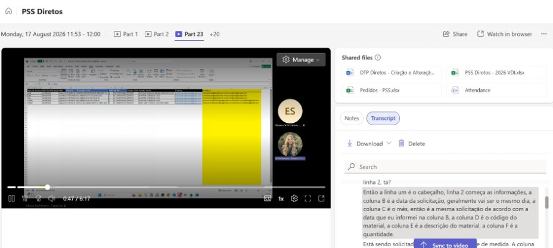
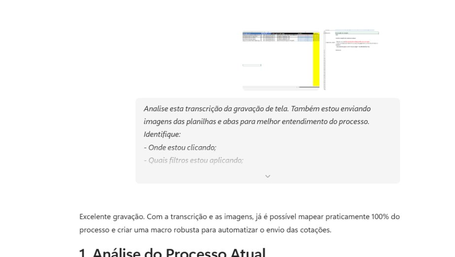
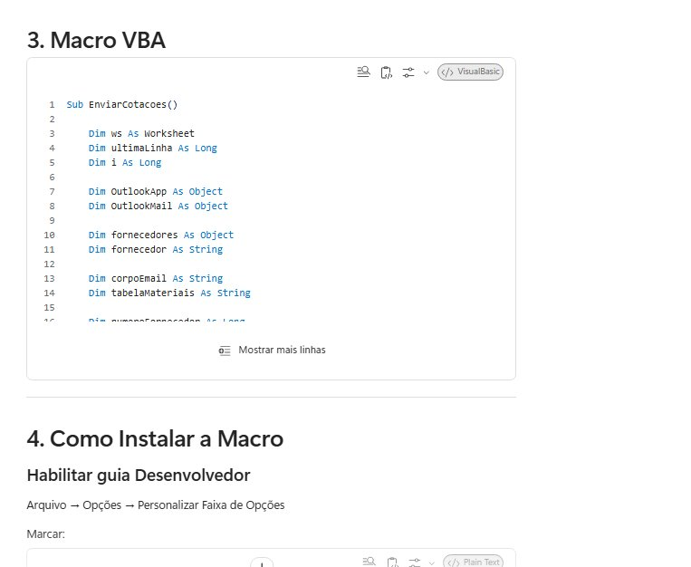
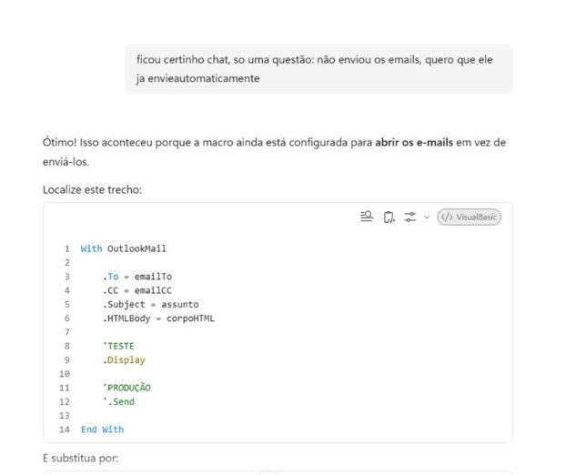

IA Na Prática
Criar automações, estruturar prompts eficientes e desenvolver macros que simplificam e otimizam os processos do seu dia a dia.
Prompts Inteligentes
Aprenda a fórmula ideal para obter respostas perfeitas.
Macros & VBA
Automatize tarefas repetitivas no Excel em segundos.
Desafio Interativo
Teste seus conhecimentos com quiz com tempo e ranking!
Agenda Principal
IA no Nosso Dia a Dia
Como a IA pode economizar horas em tarefas rotineiras, e-mails e análises.
Criar PROMPTS Eficientes
Como saber conversar com a IA utilizando a fórmula dos 5 elementos cruciais.
Como Pedir uma Macro para a IA
Mapeamento, gravações de tela e o prompt ideal para gerar VBA perfeito.
Desafio Interativo (Quiz com Timer)
Competição de prompts em tempo real com ranking de líderes no final!
Mitos e Verdades sobre Prompts
O que é mito e o que é verdade nas boas práticas de prompt engineering.
Mitos e Verdades sobre Prompts
1 Limite de palavras e concisão
VerdadePrompts longos e poluídos podem piorar as respostas; o ideal é manter em torno de 250 palavras e ser direto.
Mesmo com janelas de contexto gigantes, instruções prolixas geram ruído. Ser direto e focar no necessário melhora a precisão.
2 Uso de exemplos (Few-Shot Prompting)
VerdadeFornecer exemplos ajuda a definir o formato, mas passar de 3 exemplos traz retornos decrescentes ou pode piorar a precisão.
2 a 3 exemplos (few-shot) já ensinam o padrão de formatação, sem consumir contexto desnecessário.
3 Atribuição de Personas ("Atue como um especialista...")
VerdadeDefinir uma persona não aumenta a precisão factual da IA, servindo apenas para calibrar tom de voz, estilo ou piadas.
Metanálises mostram que dizer "você é advogado com 20 anos" não torna os fatos jurídicos mais corretos; muda vocabulário e formalidade.
4 Modelos Rápidos vs. Modelos Reflexivos (Chain of Thought)
VerdadePedir para "pensar passo a passo" é essencial em modelos padrão/rápidos, mas em modelos de raciocínio profundo isso já acontece "de fábrica".
Modelos reflexivos já usam raciocínio encadeado na arquitetura básica. Forçar textos longos neles só gera redundância.
5 Multi-tarefas em um único prompt
VerdadePedir muitas coisas de uma vez em modelos rápidos aumenta a chance de erro/esquecimento. O ideal é dividir por etapas ou usar modelos de raciocínio profundo para tarefas compostas.
O acúmulo de instruções em um único comando gera perda de atenção em modelos padrão.
Resumo: seja direto, use poucos exemplos, defina persona só para tom, e adapte a profundidade do prompt ao tipo de modelo e à complexidade da tarefa.
Como a IA pode ajudar no dia a dia?
Principais Usos Práticos
Cenário: "Voltei de férias com 200 e-mails pendentes"
Como a IA apoia: Analisa a caixa de entrada, identifica urgências, sintetiza threads complexas e gera rascunhos de resposta em segundos.
Ideia registrada! Você pode usar a IA para automatizar isso hoje mesmo.
Criar PROMPTS: Como conversar com a IA?
Contexto + Objetivo + Público + Formato + Detalhes = Melhores Resultados!
Evite Prompts Fracos
"Crie um e-mail sobre atraso na entrega por conta do problema X."
Motivo: Gera respostas genéricas e sem tom adequado.Prompt Estruturado Perfeito
"Crie um e-mail profissional para um cliente informando atraso na entrega devido a problemas de transporte. Explique o ocorrido de forma transparente, informe a nova previsão de entrega e mantenha um tom cordial."
Como solicitar uma Macro para a IA?
Defina o resultado e etapas repetitivas.
Explique colunas, abas e filtros passo a passo.
Anexe transcrição, prints e o prompt detalhado.
Execute o código VBA inicial com poucas linhas.
Erros acontecem. Ajuste e interaja com a IA!
"Analise esta transcrição da gravação de tela. Também estou enviando imagens das planilhas. Identifique: onde clico, quais filtros aplico, colunas utilizadas e fórmulas. Com base nisso: 1. Gere uma macro VBA que reproduza exatamente o processo; 2. Comente o código para facilitação de manutenção; 3. Explique como instalar no Excel e criar o botão de disparo."




Quiz de Prompts & IA
São 4 questões dinâmicas. Você terá 15 segundos por Pergunta! Respostas mais rápidas acumulam pontos bônus.
Carregando pergunta...
Ranking Geral em Tempo Real
Tabela Completa de Desempenho
Carregando dados do servidor...
Desafio Prático: Validação e Auditoria de Planilhas
Você tem uma planilha de acompanhamento e precisa garantir que não existam campos vazios ou inconsistências antes de gerar um relatório oficial.
Papel: Atue como um especialista em auditoria de dados e Excel.
Contexto: Tenho uma planilha com as colunas: Data (Coluna A), Ticket (Coluna B), Status (Coluna C) e Data de Conclusão (Coluna D).
Tarefa: Crie uma solução (fórmula ou código VBA) que identifique linhas com campos em branco e valide se a 'Data de Conclusão' está preenchida enquanto o 'Status' não está marcado como 'Concluído'.
Formato: Apresente o passo a passo de implementação, o código/fórmula e como destacar visualmente os erros na planilha.
Obrigado!
"Make it real."
Coloque em prática o que aprendeu hoje. Comece aplicando a fórmula de prompts na sua próxima tarefa e automatize seus processos diários!